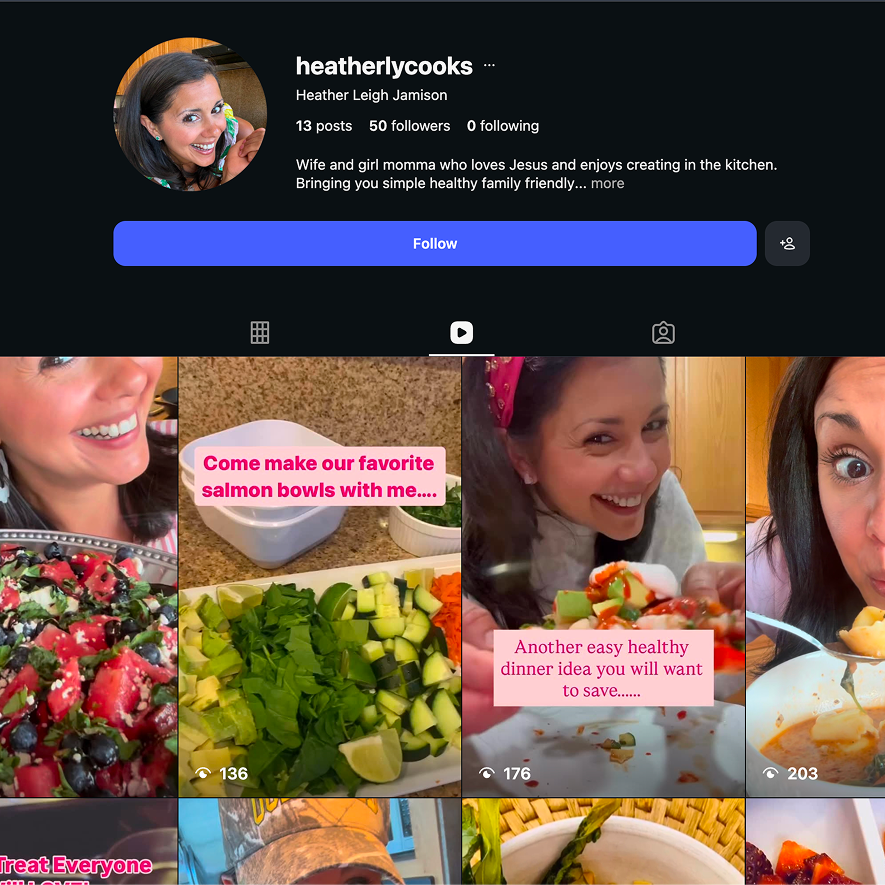
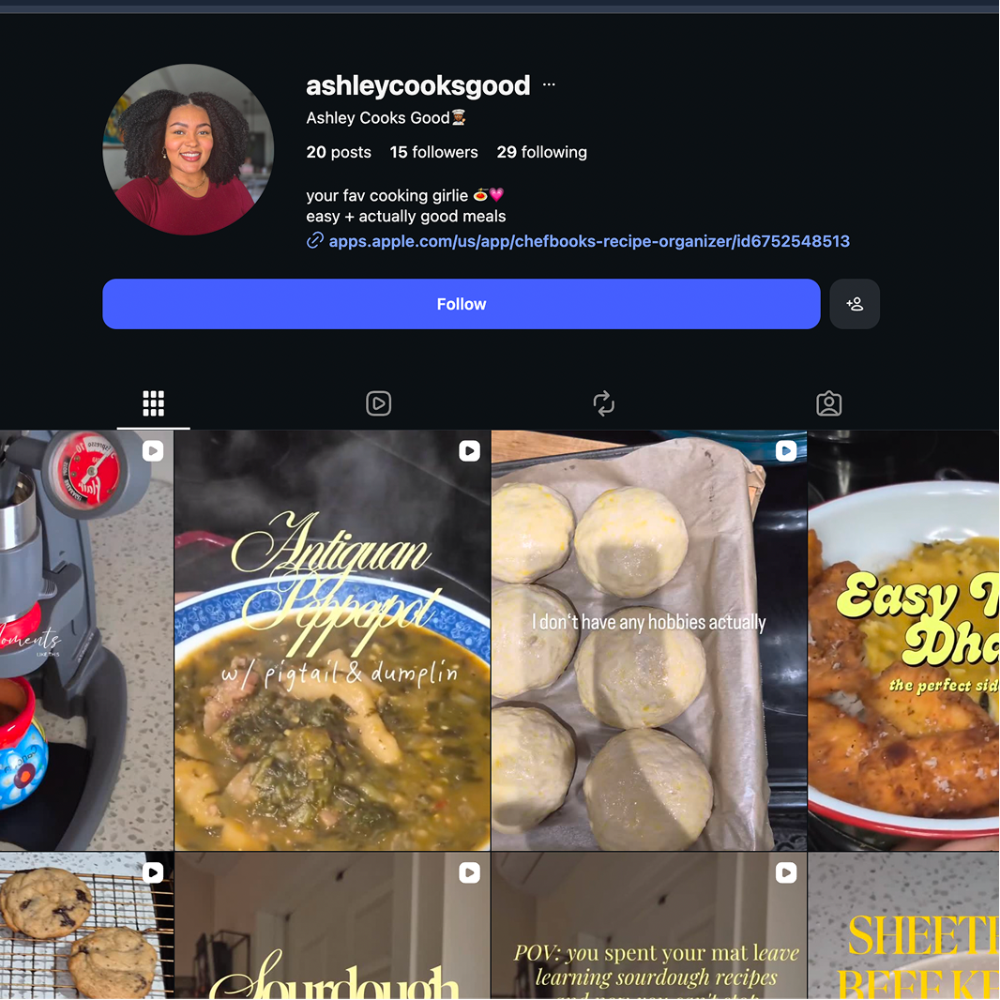
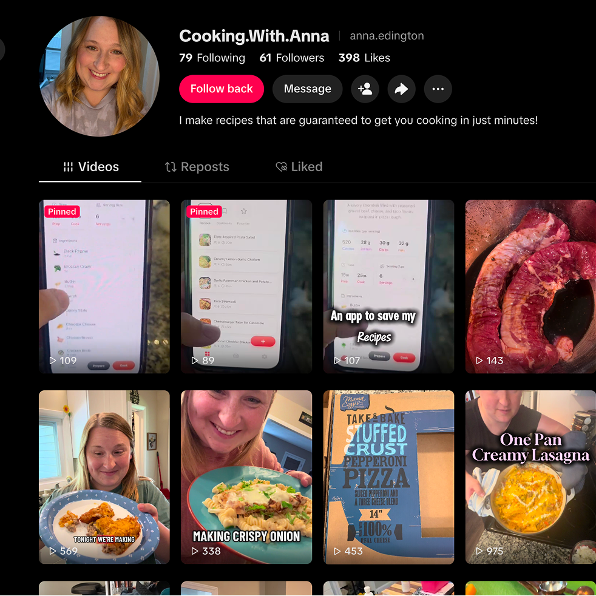

Running a UGC Creator Program



May 2026
This spring we ran a three-month experiment: a UGC creator program for Chefbooks. Three creators, see what happens.
The idea was to recruit mom creators specifically. Chefbooks is for anyone who loves cooking content, but moms felt like a natural fit—they're making food for their families every day, and we figured creators who actually lived that would make content that resonated with our audience.
It worked—sort of. We did get views, some downloads, and we were generating some revenue. But it was well below what we expected going in. Views were lower than we'd hoped, which capped our clicks, which capped our conversions. The revenue was there, just not at the scale we were targeting.
Looking back, a lot of that was on us. We didn't push for enough output, so we never got the volume to figure out what actually worked. Classic mistake of running an experiment too small to learn from. You can't optimize when the signal is that weak.
But the bigger thing I took away: don't try to build a creator from scratch. If you want fast growth, pay someone who's already gone viral. Growing someone from the ground up is slow and you're basically betting they'll figure it out. Paying for proven reach is just more reliable. That assumption—that we could build our creators up—was the core mistake.
If we do this again, we'll use a proper UGC service instead of finding and managing people ourselves. And we'll go bigger. I want to try ten creators next time, ideally people who already live on TikTok and Instagram and know how to make content land.